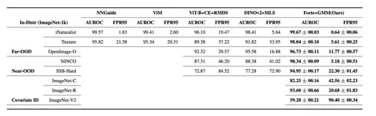

Сегодня разбираем статью, в которой авторы представляют новый метод обнаружения выбросов (out-of-distribution) для картиночных датасетов. Метод показал лучшие результаты в задаче Out-of-Distribution Detection on ImageNet-1k vs NINCO (AUROC = 98.34, FPR@95 = 5.18).
В работе утверждается, что низкое значение likelihood не всегда эффективно для обнаружения аутлаеров в пространствах высокой размерности. Вместо likelihood предлагается использовать оценку typicality, по аналогии с подходом из Density of States Estimator (DoSE): для каждого изображения собираются статистики эмбеддинга, после чего на этих признаках обучается модель оценки плотности. Авторы тестируют One-Class SVM, Gaussian Kernel Density Estimation и Gaussian Mixture Model. Полученные оценки плотности используются для вычисления typicality каждого изображения. При этом для обучения используются только in-distribution-данные. Для получения статистик применяются локальные геометрические признаки из работ по manifold estimation (например, Recall per point — доля in-distribution-семплов в радиусе, равном расстоянию до ближайшего соседа).
Авторы показывают, что метод позволяет успешно обнаруживать сгенерированные изображения. Например, при модификации изображений с помощью Stable Diffusion 2.0 при strength=0.5 (умеренное изменение оригинала) достигаются AUROC = 82.93 и FPR@95 = 46.80.
Этот алгоритм оказался интересен ML-разработке Яндекс Карт в задаче поиска фотографий, которые пользователи по ошибке загрузили в неправильную организацию. Его применили для нахождения аутлаеров на двух датасетах: один разметили вручную, второй — автоматически. Для автоматической разметки использовали косинус между изображением и строкой, состоящей из {название организации} + {рубрика организации}.
На размеченном датасете Forte показал AUROC = 91.68 и FPR@95TPR = 20.95, а на синтетическом — AUROC = 85.24 и FPR@95TPR = 93.24. При этом текущий бейзлайн, который фильтрует аутлайеры по значению косинуса, набирает AUROC = 81.02 и FPR@95TPR = 82.87.
Пока преимущество Forte над нашим бейзлайном не выглядит значительным, но идея использования методов из manifold estimation кажется перспективной.
Разбор подготовил
CV Time
